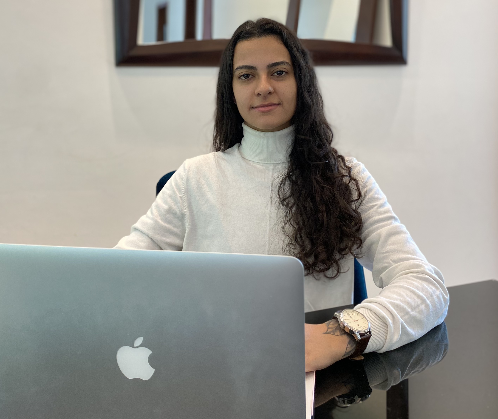

Boas vindas ao meu Portfólio!
Informações pessoais
Olá! Sou Bárbara Portes, de Belo Horizonte/MG e estou cursando o primeiro semestre de Análise e Desenvolvimento de Sistemas no Instituto Infnet, busco oportunidades para adquirir experiência e desenvolver minhas habilidades como desenvolvedora. Atualmente estou aprofundando meus conhecimentos sobre a linguagem C# e .NET através de cursos da plataforma Alura e recentemente adquiri o certificado profissional Foundational C# with Microsoft.
Além disso, fui aprovada em uma bolsa de estudos para o Santander Bootcamp Cibersegurança, uma área bastante promissora, onde estou aprendendo conceitos e princípios importantes sobre metodologias ágeis; Git e GitHub; lógica de programação e pensamento computacional; fundamentos de cibersegurança; testes de invasão e busca por vulnerabilidades (pentest, phishing, man in the middle e ransomware).
Realizei um intercâmbio para Vancouver/Canadá, com intuito de aprimorar minha conversação, no qual alcancei inglês nível avançado e obtive um certificado de melhor aluna do mês. O programa teve duração de 8 meses e durante este tempo estudei pela instituição ELS Language Centers.
Acesse minhas redes:


Características pessoais
Sou uma pessoa extremamente dedicada e durante minhas experiências de vida desenvolvi boas soft skills como: habilidades de comunicação, escuta ativa, empatia, adaptabilidade, gestão de tempo, além da minha principal característica: pensamento analítico. Solucionar diferentes tipos de problema é o que me move e desperta minha criatividade!
Conhecimento
Durante o curso Foundational C# with Microsoft, desenvolvi uma boa base na linguagem C# e .NET e aprendi conceitos e fundamentos essenciais da programação e possuo projetos relacionados em meu GitHub (tipos de dados; orientação a objetos; manipulação de strings, datas e arrays; conversão de tipos de dados; operadores; estruturas condicionais; estruturas de repetição; escrever métodos e funções; exceptions; criar aplicações de console).
Além disso, possuo conhecimentos em: metodologias ágeis, como Scrum e Kanban; HTML; CSS; Lógica de programação; JavaScript; Git e GitHub.
Projetos
- MiniJogo - C# e .NET
- Aplicativo que coordena visitas ao Zoológico - C#/.NET
- Sistema de adoção de Pets - C#/.NET
- Plataforma de cadastro e compartilhamento de vídeos - HTML/CSS/JavaScript
- Desafio Número Secreto com reconhecimento de voz - HTML/CSS/JavaScript
- Checklist Mochila de Viagem - HTML/CSS/JavaScript
- Jogo X-Men - HTML/CSS/JavaScript
- Projeto Cordel - HTML/CSS
- Confira aqui todos os meus projetos
Histórico acadêmico e profissional
Meu primeiro contato com a área de TI foi no Colégio Técnico COTEMIG, onde participei do desenvolvimento de sistemas junto com minha equipe. Na época me identifiquei tanto que realizei diversos cursos fora do colégio, obtendo inclusive um Diploma de Honra ao Mérito por ser a melhor da turma.
Infelizmente, por motivos pessoais, não foi possível seguir uma carreira de TI e acabei entrando na área jurídica, na qual me formei em Direito em Dezembro de 2022 na FAMIG - Faculdade Minas Gerais e, durante esse tempo, trabalhei no gabinete de um Procurador de Justiça (Ministério Público de Minas Gerais) como estagiária durante dois anos.
No início de 2023 resolvi seguir meu coração e voltar para a área de TI, foi quando iniciei cursos de lógica de programação, HTML/CSS e JavaScript com o Professor Gustavo Guanabara, da plataforma CursoEmVídeo. Em seguida assinei a plataforma Alura para aprofundar ainda mais nessas habilidades e em outras. Em Outubro, iniciei Análise e Desenvolvimento de Sistemas no Infnet, onde estou aprimorando, também, minhas habilidades em HTML, CSS e JavaScript.
Atualmente busco minha primeira oportunidade na área de desenvolvimento de software e continuo estudando através de cursos e desenvolvendo projetos para me aprimorar cada vez mais.
Certificações
- Inglês Avançado - Semi Intensive Program - ELS Language Centers
- Foundational C# with Microsoft - FreeCodeCamp
- C# - Criando a primeira aplicação - Alura
- C# - Orientação a Objetos - Alura
- Desenvolva aplicações Web com JavaScript - Alura
- Santander Bootcamp Cibersegurança - DIO (Em andamento)
- Certificado de Conclusão de Cursos Completo - Alura Cursos
- Iniciante em programação - Alura Cursos
- HTML e CSS para projetos web - Alura Cursos
- CSS - Estilos - Alura Cursos
Currículo
Clique aqui para baixar meu currículo.